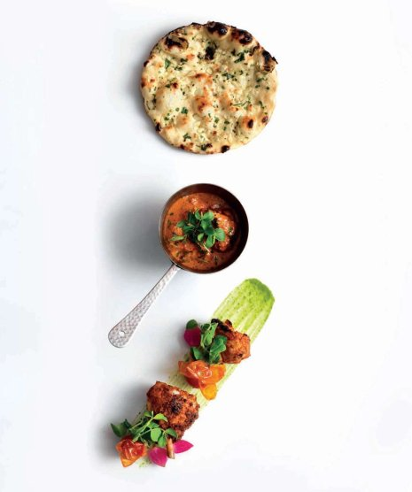

Butter chicken (Murg makhani)

Butter chicken is a classic and should be served like one. That’s exactly what we do at Benares, but we can’t resist adding a few of our own stylish twists. We also always serve it with freshly baked garlic and mint naans, but plain ones are just as suitable.
To garnish
Put the marinade in a non-metallic bowl, add the chicken supremes and make sure they are well covered, then cover with cling-film and leave to marinate in the fridge for at least 2 hours, ideally overnight.
When ready to cook, preheat the grill to high and preheat the oven to 200°C. Put the gravy in a saucepan, add the garam masala and add salt to taste. Bring to the boil, then lower the heat and leave to simmer slowly.
Grill the chicken supremes, still coated with their marinade, for 4 minutes. You do not want them cooked through completely at this point.
Cut each partially cooked supreme into 5 pieces. Set aside 2 pieces from each supreme, then put the remainder in the gravy and leave to simmer for 10 minutes, or until they are cooked through and the juices run clear.
Meanwhile, melt the butter with the oil in a small pan. Add the chaat masala and lime juice, then toss the reserved chicken pieces in it. Transfer the chicken pieces to a roasting tray lined with a non-stick oven mat and roast for 8 minutes, or until cooked through, the juices run clear and they are lightly charred. Leave to rest for 5 minutes, covered with foil.
Remove the pieces of chicken from the gravy and roll them in the juices accumulated in the bottom of the pan, then return them to the gravy. Return the gravy to the boil.
Serve the chicken pieces in the gravy with the roasted pieces alongside and the naans. Garnish and serve immediately.